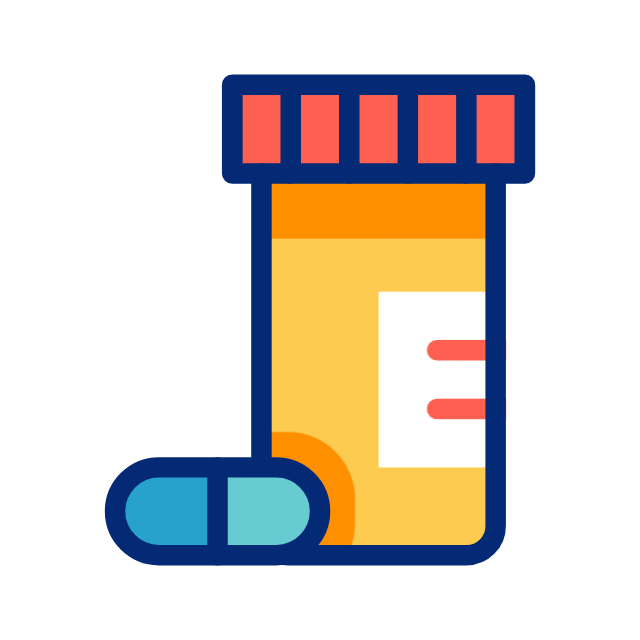
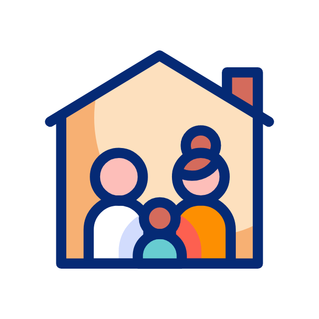
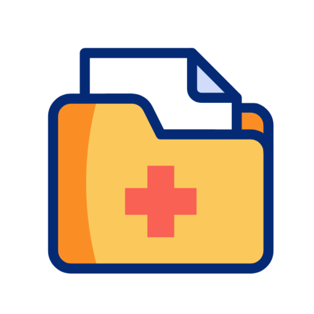

Funcionalidades Principales
Todo lo que necesitas para cuidar a tus seres queridos en un solo lugar

Gestión de Medicamentos
Recordatorios inteligentes para tomar medicinas a tiempo. Notificaciones para familiares en caso de olvidos.
Citas Médicas
Organiza y recuerda todas las citas médicas importantes. Comparte el calendario con familiares.
Geolocalización
Mantén contacto visual con tu familiar. Ubicación en tiempo real con total respeto a la privacidad.
Alertas Inteligentes
Notificaciones push personalizadas para familiares. Sistema de emergencias con un solo toque.

Círculo Familiar
Vincula múltiples familiares a un adulto mayor. Roles personalizados y permisos configurables.

Historial Médico
Registro completo de medicamentos tomados y citas atendidas. Exportable para consultas médicas.